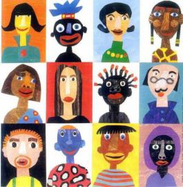

L'UNIONE EUROPEA NELL'ECONOMIA GLOBALE FRA COMPETITIVITA' E SOLIDARIETA'
Atti
del convegno organizzato a
CastelMaggiore dal comitato
“Conoscere l'Unione Europea”
L'Unione Europea
può essere
considerata un insieme di famiglie unitesi insieme a partire dal
secondo
dopoguerra per evitare guerre fratricide. Con il passare degli anni
fino a oggi
questa "famiglia" è andata via via allargandosi e gli stati che
oggi
ne fanno parte sono 27.
Tante sono quindi le nazioni e i popoli che hanno deciso di unire
insieme le
loro forze e i loro propositi per obiettivi comuni quali: la
cooperazione,
l'interazione, la multilateralità, il dialogo fra culture, il
rispetto e la
tolleranza reciproca, l'aiuto agli stati più in ritardo. Le
problematiche che
vengono a crearsi all'interno dell'Europa nel raggiungimento di questi
ultimi
però sono crescenti e può essere interessante analizzarne
alcuni aspetti.
LA COMPETITIVITA'
la competitività è misurata con la crescita di un
paese e misura la
capacità effettiva di crescita, dato un medio/lungo termine, in
economie
competitive, data una variazione costante di tassi; un esempio per
poterla
misurare è il PIL che indica la sommatoria delle produzioni in
uno stato in un
tempo determinato.
Diversi sono i fattori che vanno a determinare i tassi di
crescita:
· nell'ambito della della demografia su cui hanno influenza le politiche migratorie:
-quanta gente
è presente?
-quanto questa può lavorare?
· nell' ambito di Politica economica
-quanto
effettivamente si
lavora (tasso di occupazione)?
-quanto produce chi lavora?
E' sugli ultimi 2 punti, riguardanti la politica economica che
sarà necessario
concentrarsi, quindi in ambiti microeconomici che agiscono direttamente
sui
singoli problemi.
Gli strumenti he possono influenzare e stimolare positivamente la
produttività
totale dei fattori sono:
· l'innovazione:essere all'avanguardia rispetto alla concorrenza
· le infrastrutture: la presenza di impianti competitivi
· il capitale umano: la disponibilità di persone
· le liberalizzazioni: la sempre maggiore libertà nell'agire
Per l'Europa c'è un'esigenza di crescita, di rafforzamento, di unione per aumentare la sua competitività a livello mondiale.
LA SOLIDARIETA'
prima
della
formazione dell'Europa l'aiuto fra Stati non era presente, poteva
semmai
esistere l'aiuto fra cittadini. Con il Trattato di Maastricht, nel
rispetto dei
requisiti dei conti pubblici si sono fondate le basi per un forte
principio di
solidarietà.
Rimangono inoltre parecchie difficoltà a causa delle differenze
politiche tra i
diversi stati mentre è necessario invece trovare politiche
comuni che
garantiscano pensieri comuni. In questo ambito il primo vero passo
fondamentale
è l'approvazione della Costituzione Europea.
La vera impresa parlando di solidarietà è quella, da
parte di tutti gli stati,
di rinunciare a parte del proprio potere, del proprio denaro, dei
propri mezzi
per metterli a disposizione della Comunità, cercando di
migliorare la
condizione di qualcuno senza peggiorare quella degli altri. Questo
principio
non è però oggi ancora attuato in quanto le attuali
politiche comuni non lo
rispettano.
Lo scenario futuro è comunque ancora aperto ma dipenderà
dalla capacità
politica di rispecchiare le giuste esigenze all'interno vari stati.
LA
CITTADINANZA
EUROPEA
E' necessario dare al
Processo di
integrazione una Dimensione Politica. La cittadinanza indica un vincolo
di
appartenenza per ogni cittadino. Introdotta in ambito ufficiale nel
1992 con il
Trattato di Maastricht ha però origine da un'idea del presidente
Giulio
Andreotti del 1972, motivata dal fatto di voler dare una dimensione di
ntegrazione tra gli stati. Con la Cittadinanza Europea l'individuo,
oltre che
semplice consumatore, diventa così cittadino con una dimensione
politica
oltre che economica.
La cittadinanza
dell'Unione non va a sostituirsi a
quella nazionale, ma ad aggiungersi. L'Europa non è un unico
stato, e ognuno di
quelli che vi partecipano mantengono una propria identità, si
tratta quindi di
una cittadinanza che non attribuisce nazionalità. Non si
può quindi parlare di
un Popolo Europeo ma di Popoli Europei, legati tra loro da alcuni
vincoli. A
differenza delle cittadinaze nazionali però, questa non implica
doveri scritti.
Il primo degli aspetti che inizia a delinearsi come dovere è
quello della solidarietà.
Per quanto riguarda i Diritti invece, questi sono presenti nella carta
dei
“Diritti Fondamentali dei Cittadini” (Nizza 2000) che non
ha però valore
giuridico effettivo. Esempi di diritti sono: libertà di
circolazione e
soggiorno per tutti i cittadini senza condizione di sorta, elettorato
attivo e
passivo per tutti gli stati membri sia per elezioni locali che del
parlamento (
importanza simbolica della valorizzazione degli enti locali dal punto
di vista
europeo), diritto di petizione.
FUTURO DELL'UNIONE
EUROPEA
La situazione è ora, sotto l'aspetto di un ordinamento comune a tutti i paesi, in un momento di stallo. La Costituzione, o meglio il Trattato Costituzionale è stato abbandonato dopo essee stato respinto da Francia (per contestazioni politiche interne) e Olanda (per motivi economici che li avrebbero svantaggiati).